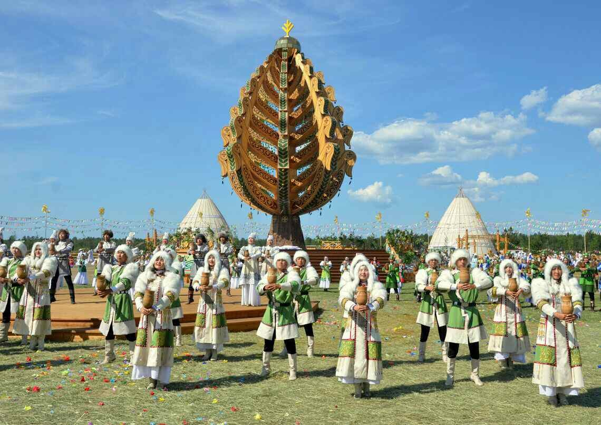
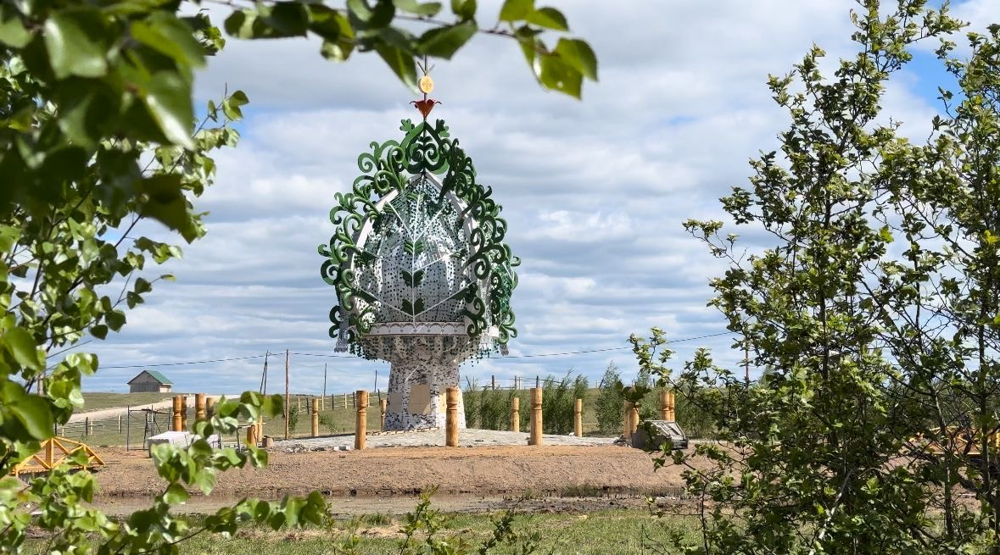

История появления
По легендам, первый Ысыах был проведён одним из родоначальников якутов Эллэем Боотуром на горе Чочур-Муран. Первые письменные свидетельства западных исследователей можно встретить в дневниковых записях голландского путешественника И. Идеса, проезжавшего через Сибирь в Китай в конце XVII века. Он отмечал, что этот праздник справляется с большой торжественностью: якуты разводят костры и поддерживают их на протяжении всего праздника. Во время торжеств, олицетворяющих начало лета и пробуждение природы, здесь принято вспоминать предков и их обычаи. Этнограф Екатерина Романова считает, что для якутов подобный праздник не просто повод повеселиться. «В Якутии очень длинная зима, - говорит она. - И единственная возможность встретиться всем родом - это здесь».
Коротко о ритуалах
Алгыстааhын
Обряд очищения огнем, Проводит его Алгысчыт, который выступает посредником между людьми и верховными богами Айыы.
Оhуохай
Всеобщее единение людей символизирует хоровод оhуохай, означающий жизненный круг. Во время него танцующие, двигаясь в неторопливом темпе по направлению движения солнца.
Кымыс иhиитэ
Священный ритуал коллективного причастия и кругового угощения на Ысыахе, символизирующий изобилие, физическое очищение и передачу благословения.
Дыгын оонньуута
Спортивное мероприятие Ысыаха Туймаады в котором участвуют и борятся за призовые 16 спортсменов прошедшие отбор на соревнования.
Медиаархив

